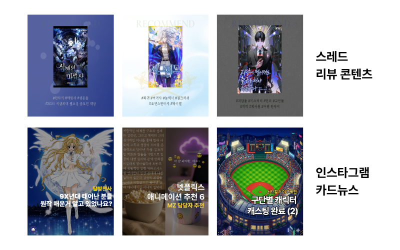
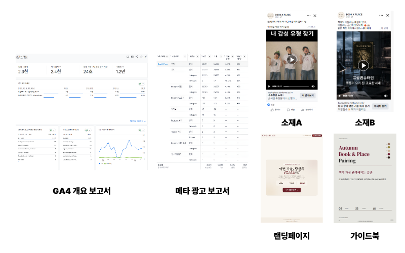
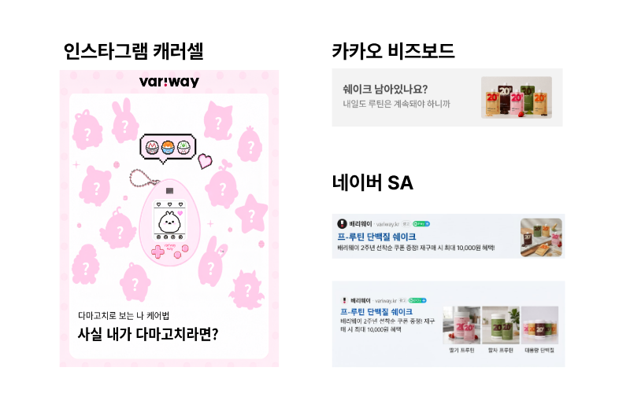
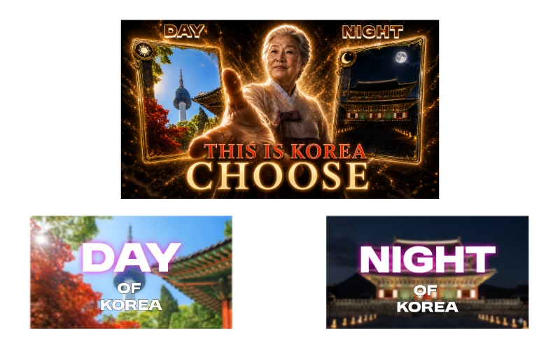
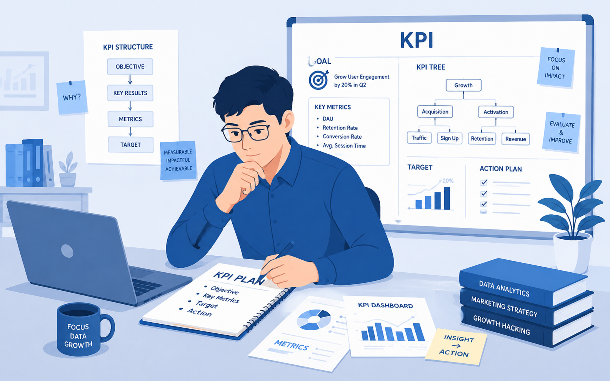

GA4·Pixel 트래킹 세팅 및 GAS 활용 마케팅 파이프라인 자동화
채널별 전환 데이터 분석 및 퍼널별 매체 예산 최적화
타깃 세분화 기반 콘텐츠 실험으로 도달률 3배 상승 경험
페르소나 페인포인트 분석&시선 흐름을 고려한 모바일 UX 기획
시장 분석부터 생성형 AI 툴을 활용한 비디오 콘텐츠 제작까지
공급망 및 시즌 지표 등 실무 데이터를 반영한 현실적 KPI 리빌딩
개인 스레드 및 인스타그램 채널 운영을 통해 SNS 스킬과 경험을 획득합니다.
타깃 맞춤형 텍스트 기획 및 트렌드 결합을 통해 평균 조회수 2,600회에서 7,800회로 상승 견인
단순 이슈 소비를 넘어 대중의 관심사를 자사 콘텐츠 메시지와 자연스럽게 연결하는 기획력 확보

<북페어링>을 주제로 META 광고를 통해 신규 잠재 고객(리드) 확보를 위한 프로젝트입니다.
18~34 타깃 맞춤 숏폼 소재 최적화를 통해 CTR 4.30% 및 랜딩 조회당 비용 114원 달성▶다만 초기 클릭률과 유입 비용이 우수하다고 해서 무조건 최종 전환까지 이어지는 것은 아니며, 클릭을 유발한 기대감이 랜딩 페이지 첫 화면까지 매끄럽게 연결되는 설계가 필요하다는 것을 깨달음
리드 획득 단계 이탈률 86.3%에서 68.1%로 개선 및 2차 소재 개선으로 CPL 293원에서 121원으로 절감▶유입 단계에서 고관여 유저를 필터링 할 수 있는 퍼널의 연결성을 이해하고, 더 단계별 이탈을 파악할 수 있는 추적 포인트를 페이지나 문항 별로 세밀하게 심어야겠다고 느낌

식사 대용 쉐이크 브랜드 '배리웨이'의 신규 유입 대비 저조한 재구매 및 이탈 문제를 해결하기 위한 프로젝트입니다.
편중된 예산 구조를 개선하여 3:4:3 예산 가이드라인 및 매체별 타깃 ROAS 구체화
기획 의도에 맞는 배너를 직접 구현하는 Figma 디자인 숙련도 및 생성형 AI(이미지/카피) 실무 활용 능력 향상

방한 외국인 타깃 유튜브 채널 활성화 및 시청자의 능동적 인게이지먼트를 증대하기 위한 영상 기획입니다.
외부 리소스나 촬영 없이 생성형 AI 툴과 편집 툴을 활용해 기획안을 고품질 영상 콘텐츠 단독 구현하는 실무 테크 역량 확보
업계 평균 대비 현실적인 목표 KPI(댓글 비율 0.5%, 조회수 15만) 도출 및 인터랙티브 플로우 설계 노하우 획득

오프라인 아울렛 입점 브랜드(남성복, 아웃도어 등)의 매출 둔화 원인을 파악하고 월간 목표를 새롭게 수립하는 과제입니다.
현장 리스크를 방어하고 브랜드 본사-매장 간의 목표 간극을 줄이는 현실적인 1월 월간 KPI 리빌딩 완수
마케팅/영업 목표 수립 시 거시적 수치뿐 아니라 공급망과 현장 변수까지 종합적으로 고려하는 의사결정 역량 확보

내가 좋아하는 것들을 남들도 좋아할 수 있도록, 또한 오랫동안 마음에 남을 수 있는 콘텐츠를 만들 수 있는 마케터가 되고 싶습니다.